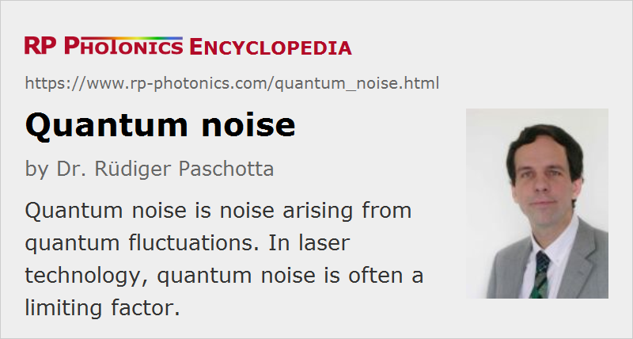

Quantum Noise
Definition: noise arising from quantum fluctuations
More specific terms: shot noise, vacuum noise, partition noise, spontaneous emission noise
German: Quantenrauschen
Categories: quantum optics, fluctuations and noise
How to cite the article; suggest additional literature
Author: Dr. Rüdiger Paschotta
Whereas the noise performance of electronic systems is often limited by thermal noise, quantum-mechanical effects often set the limits for optical systems. This is basically because owing to the high optical frequencies the photon energy in the optical domain is much higher than the thermal energy kB T at room temperature.
According to quantum mechanics, the electric field of a light beam is described by quantum mechanical operators, and the outcome of optical measurements does not simply reflect the expectation values of these operators, but is also subject to quantum fluctuations.
Typical effects of this quantum noise are:
- some intensity noise (shot noise), phase noise, and a finite linewidth even in the output of a (hypothetical) single-frequency laser which is not subject to any technical noise such as mirror vibrations
- unavoidable excess noise in optical amplifiers (→ amplifier noise)
- spontaneous emission of excited atoms or ions
- spontaneous Raman scattering
- parametric fluorescence
- partition noise occurring at beam splitters
Light with unusual quantum noise properties is called nonclassical light and occurs e.g. in the form of squeezed light.
Quantum noise is often a limiting factor for the performance of optoelectronic devices. However, it can occasionally be useful, e.g. in quantum cryptography.
For the description of quantum noise and for the calculation of quantum noise properties of devices such as lasers, some authors use a full quantum-theoretical treatment (with quantum operators), but it is often more convenient to use a semiclassical theory [2]. In the latter, the quantum fluctuations of the electromagnetic field are described in essentially the same way as classical fluctuations, so that the results are often fairly easy to interpret intuitively. However, certain rules must be observed. For example, the vacuum field is associated with white noise fluctuations of a certain magnitude. All kinds of fluctuations can be reduced by sending a field through an attenuator, but each attenuator introduces “fresh” quantum noise according to its degree of attenuation; in effect, strong attenuation leads back to the standard quantum noise.
Interesting effects occur e.g. in a laser, where vacuum fluctuations can get into the resonator e.g. through the output coupler mirror, but also at any other location where optical losses occur. Subsequently, this vacuum noise influences the noise of the circulating intracavity field, which is also influenced by, e.g., pump noise and spontaneous emission noise. The output field finally consists of two contributions: the part of the intracavity field leaking out of the resonator, and part of the vacuum field coming from outside the resonator and being reflected at the output coupler. These field contributions are partly correlated, and their combination depends on, e.g., the deviation from the resonance frequency, i.e. on the noise frequency. Far away from the resonance, the output field is dominated by reflected vacuum fluctuations, which lead to intensity noise at the shot noise level.
Questions and Comments from Users
Here you can submit questions and comments. As far as they get accepted by the author, they will appear above this paragraph together with the author’s answer. The author will decide on acceptance based on certain criteria. Essentially, the issue must be of sufficiently broad interest.
Please do not enter personal data here; we would otherwise delete it soon. (See also our privacy declaration.) If you wish to receive personal feedback or consultancy from the author, please contact him e.g. via e-mail.
By submitting the information, you give your consent to the potential publication of your inputs on our website according to our rules. (If you later retract your consent, we will delete those inputs.) As your inputs are first reviewed by the author, they may be published with some delay.
Bibliography
| [1] | C. M. Caves, “Quantum limits on noise in linear amplifiers”, Phys. Rev. D 26 (8), 1817 (1982), doi:10.1103/PhysRevD.26.1817 |
| [2] | S. Reynaud and A. Heidmann, “A semiclassical linear input output transformation for quantum fluctuations”, Opt. Commun. 71 (3-4), 209 (1989), doi:10.1016/0030-4018(89)90429-X |
| [3] | C. H. Henry and R. F. Kazarinov, “Quantum noise in photonics”, Rev. Mod. Phys. 68, 801 (1996), doi:10.1103/RevModPhys.68.801 |
See also: shot noise, amplifier noise, laser noise, nonclassical light, vacuum noise
and other articles in the categories quantum optics, fluctuations and noise
|  |
If you like this page, please share the link with your friends and colleagues, e.g. via social media:
These sharing buttons are implemented in a privacy-friendly way!